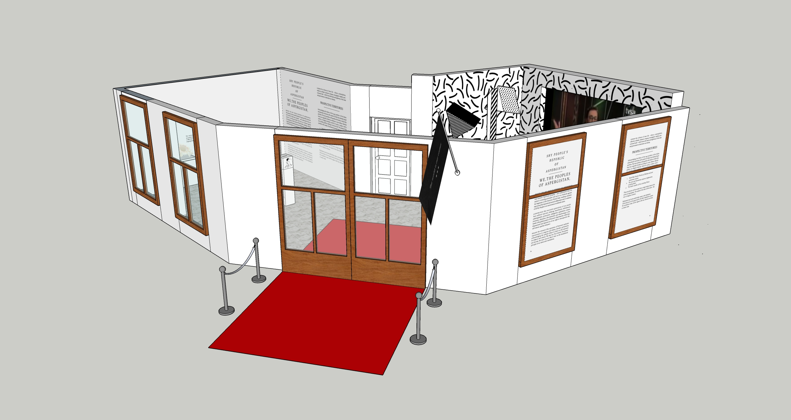
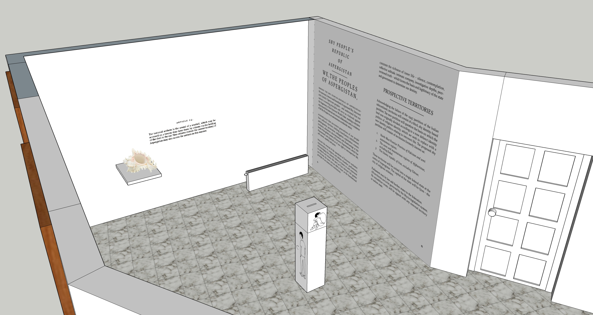
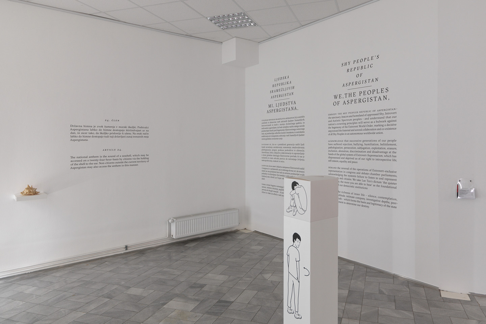
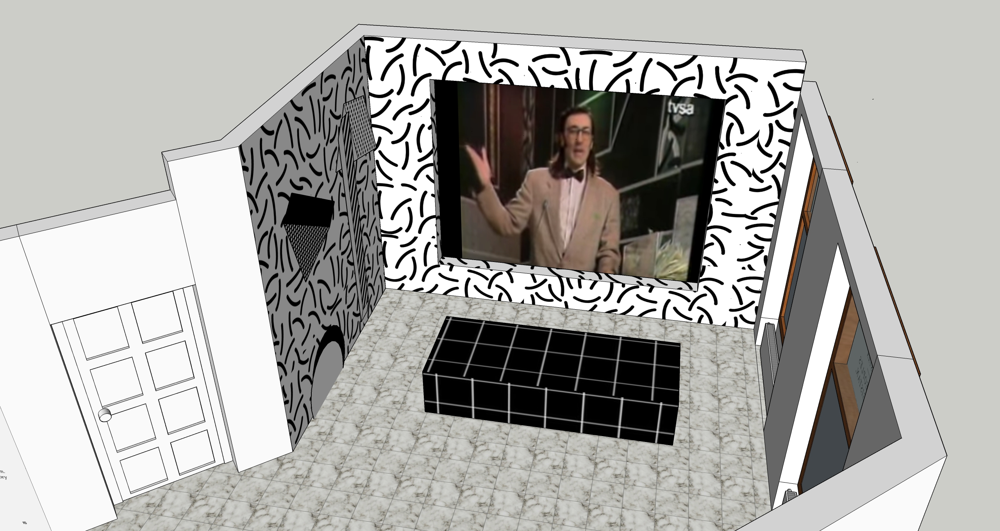
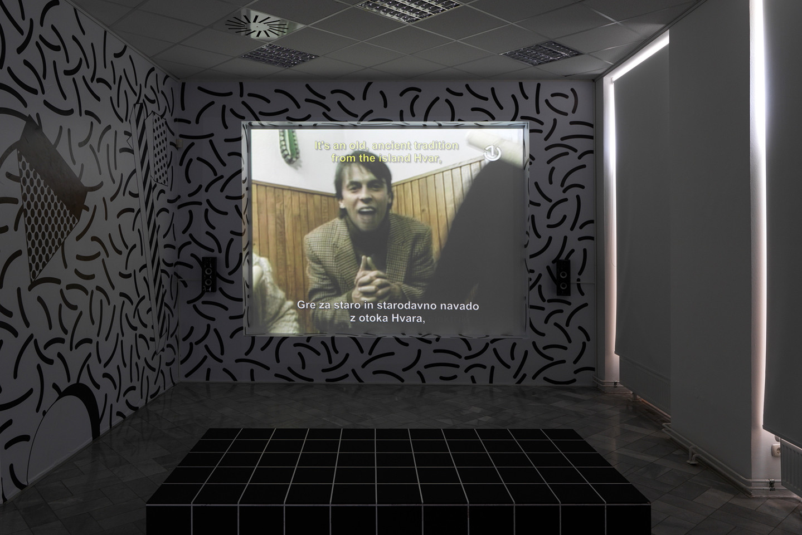

Space Design
Slavs and Tatars Internship
2019
On the occasion of the 33rd edition of The Ljubljana Biennial,
Slavs and Tatars curated an exhibition focused on graphic
editions, prints, and other works on paper historically. I was in
charge to prepare the installation and production of artists'
propositions.
-> The mockups and production of Hamja Ahsan’s installation
The Aspergian Referundum related to his book
Shy Radicals.
-> The video installation of the Yugoslav comedy show Top Lista
Nadrealista retrospective, which originally ran from late 1984 to
1991.
Slavs and Tatars is
an internationally art collective. The studio practice is based
primarily on three activities: exhibitions, publications and
lecture-performance. During my internship I was exposed to the
various stages leading to a projects’ final. From the early
creative process (idea, development, research), to the production
(design, installation, etc).
I was lucky enough to arrive when Slavs and Tatars had wonderful
projects going on: The ‘Dillio Plaza’ Installation for the 58th
Venice Biennale exhibition and the curation of the 33rd edition of
The Ljubljana Biennial ‘ Crack Up – Crack Down ’.



The Aspergian Referundum, Hamja Ahsan – Installation view


Top Lista Nadrealista retrospective – Installation view